In this homework, I implemented a comprehensive geometric modeling pipeline, beginning with the evaluation of Bezier curves and surfaces using de Casteljau’s algorithm. The core of the assignment focused on manipulating triangle meshes through the half-edge data structure, where I implemented fundamental mesh operations including edge flips and edge splits. These atomic operations served as the building blocks for the final task: implementing Loop subdivision to transform coarse polygonal meshes into smooth, high-resolution surfaces.
Building this system as a whole provided a deep appreciation for the elegance and complexity of mesh topology; I learned that while the conceptual math behind subdivision is straightforward, maintaining pointer integrity within the half-edge structure requires meticulous book-keeping. It was particularly interesting to see how local topological changes—like a single edge split—can be scaled through an iterative algorithm to fundamentally redefine the geometry of a 3D object, bridging the gap between discrete points and continuous-looking curved surfaces.
De Casteljau’s algorithm is a recursive method used to evaluate Bézier curves by performing successive linear interpolations between adjacent control points. For a given parameter \(t \in [0, 1]\), the algorithm reduces a set of \(n\) control points to \(n{-}1\) intermediate points by applying the formula
\[ p_i' = (1 - t)\,p_i + t\,p_{i+1} \]In my implementation of `evaluateStep`, I performed a single step of this process by iterating through the input vector of points and calculating the weighted average of each adjacent pair using the member variable `t`. These resulting intermediate points were stored in a new vector and returned, effectively bringing the system one level closer to the final point on the curve.
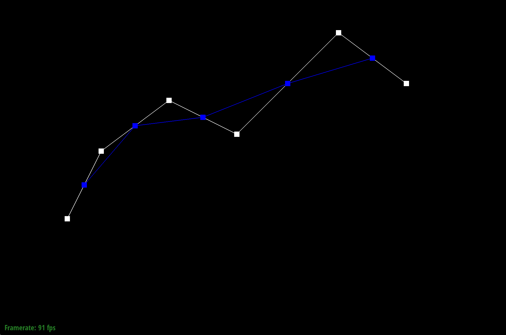
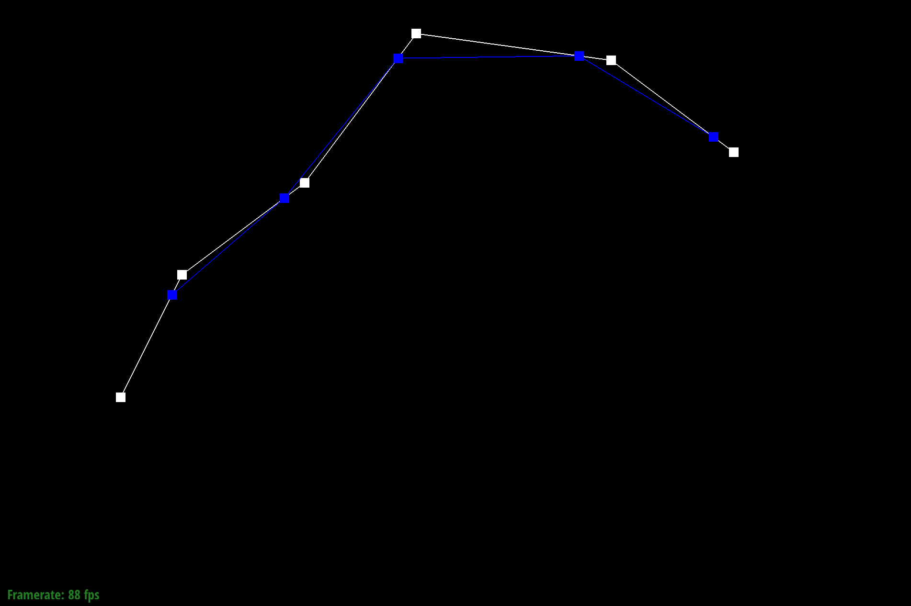
To extend de Casteljau’s algorithm to Bézier surfaces, the evaluation process is performed using a separable application of the 1D algorithm across two parametric dimensions, \(u\) and \(v\). A Bézier patch is defined by a grid of control points; my implementation first evaluates each row of this grid as an individual Bézier curve using the parameter \(u\). This is achieved through the evaluate1D helper function, which recursively calls evaluateStep until a single point is reached for each row. These resulting points define a new "moving" Bézier curve that spans the orthogonal direction. Finally, I evaluate this single curve at parameter \(v\) to find the exact 3D coordinate on the surface. This nested interpolation effectively reduces the 2D surface evaluation into a series of 1D curve evaluations, allowing us to leverage the same linear interpolation logic used for simple curves.
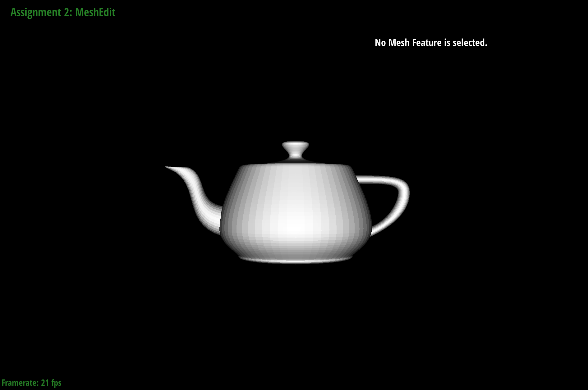
To implement area-weighted vertex normals, I traversed the one-ring of incident faces around the vertex using the half-edge data structure. Starting from the vertex’s initial half-edge, I used the h = h->twin()->next() traversal pattern to visit each neighboring face. For every non-boundary face encountered, I retrieved the positions of the three vertices forming the triangle and computed the cross product of two edge vectors, \((p1 - p0) x (p2 - p0)\). Since the magnitude of a cross product is proportional to the area of the triangle it spans, this approach naturally weights each face's contribution by its surface area. I accumulated these vectors into a running sum and finally returned the unit vector of the result, providing the necessary normal for smooth Phong shading.
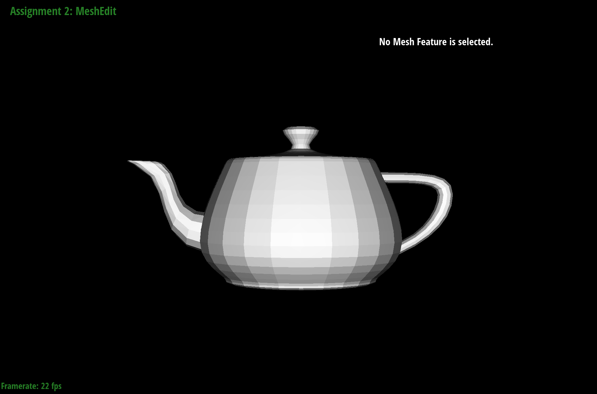
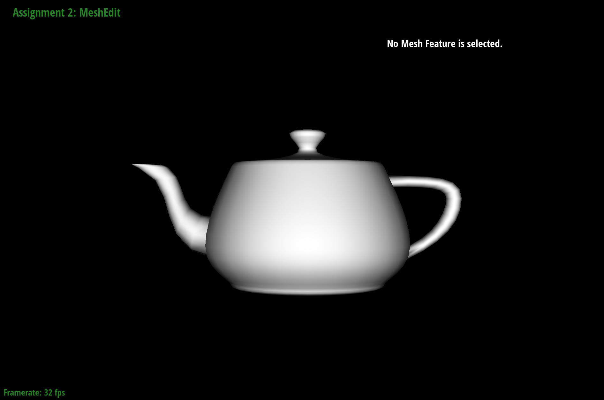
Implementing the edge flip operation required a meticulous "gather then reassign" strategy to maintain the integrity of the half-edge data structure. My implementation began by collecting iterators for every element in the local neighborhood—including all 6 internal half-edges, their outer twins, 4 vertices, 5 edges, and 2 faces—to ensure no pointers were lost during the transition. I then systematically rewired these elements using setNeighbors, rotating the central edge to connect the previously opposite vertices while updating the next pointers to redefine the two constituent triangles.
A key debugging trick I employed was the "whiteboard method": drawing a detailed "before and after" diagram to map out every pointer change before writing a single line of code. To prevent silent errors, I opted for exhaustive reassignment, explicitly updating the halfedge() pointer for every involved vertex, edge, and face, even if they theoretically remained static. This disciplined approach, reminiscent of tracing environment diagrams, ensured that the topological transformation was robust and free of the common pitfalls associated with manual pointer manipulation.
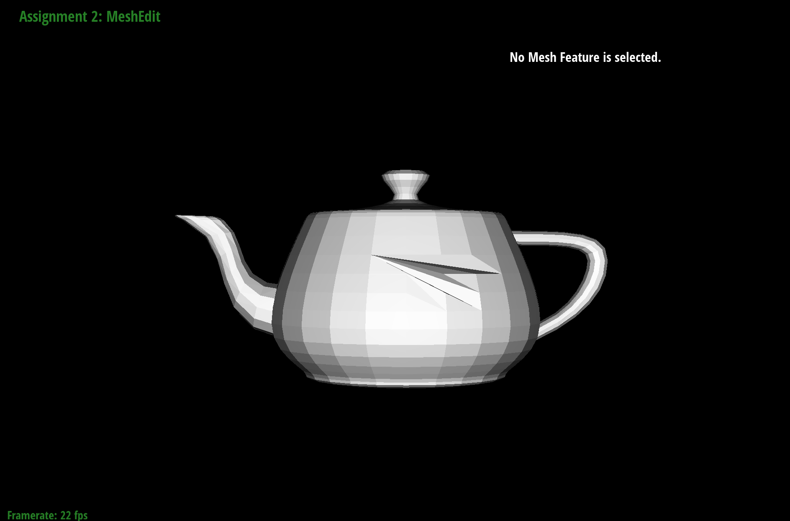
The edge split operation was the most complex topological transformation in this assignment, requiring the creation of several new mesh elements and a total reorganization of local connectivity. My implementation followed a rigid structural workflow: first, I gathered all existing elements (half-edges, vertices, edges, and faces) around the target edge. I then created the new midpoint vertex v_m, three new edges, two new faces, and six new half-edges. The core of the logic involved using setNeighbors to meticulously define the three pointers for each of the 12 resulting half-edges to form four smaller triangles within the original two-face footprint. I also implemented a boundary-aware version for extra credit, which required traversing the boundary loop to correctly splice the new half-edges into the virtual boundary face.
To manage the sheer volume of pointers, I assigned every element a descriptive variable name based on a reference diagram (e.g., h_ma for a half-edge going from vertex m to a). This made the setNeighbors calls human-readable and significantly easier to cross-reference with my drawings.
Since this operation is a prerequisite for Loop Subdivision, I proactively flagged new edges and vertices using the isNew property. Specifically, I marked the two "new" edges that cut across the original faces as isNew = true, while keeping the two halves of the original edge marked as false. This distinction is critical for the subsequent flip-and-smooth steps.
For debugging, I tested the split operation on a simple cube and verified that the mesh remained "water-tight" by checking the halfedge() pointers of every vertex. If a vertex's halfedge() was left pointing to a deleted or moved element, the renderer would immediately crash or produce "black holes," which served as a clear indicator of a pointer assignment error.
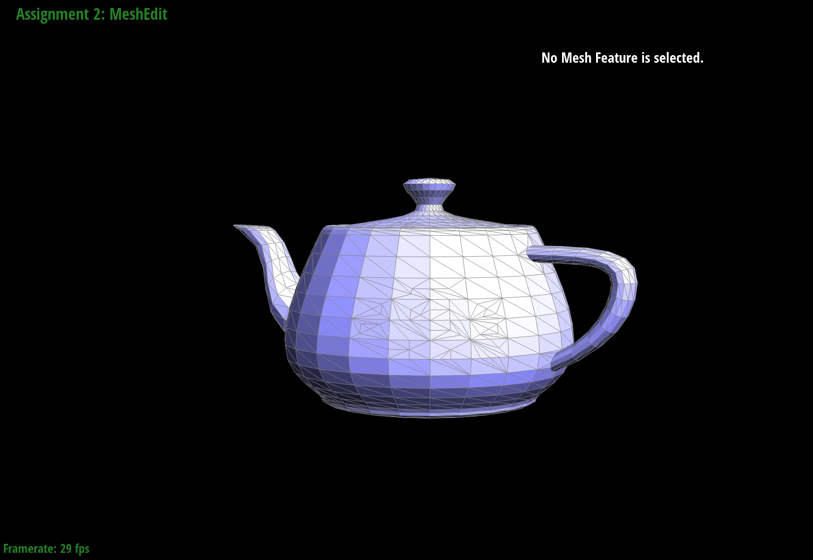
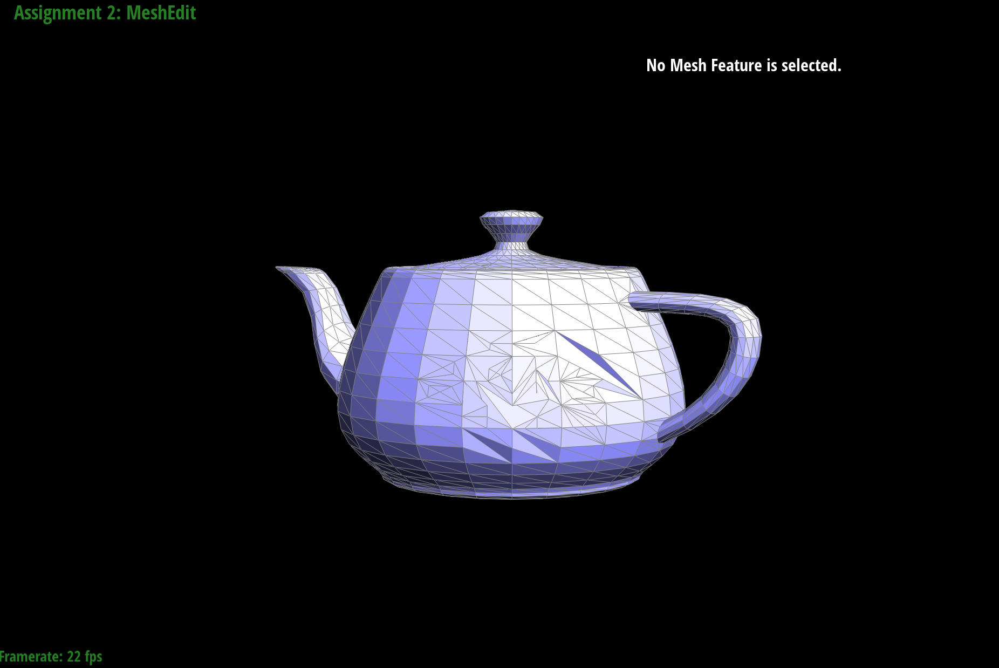
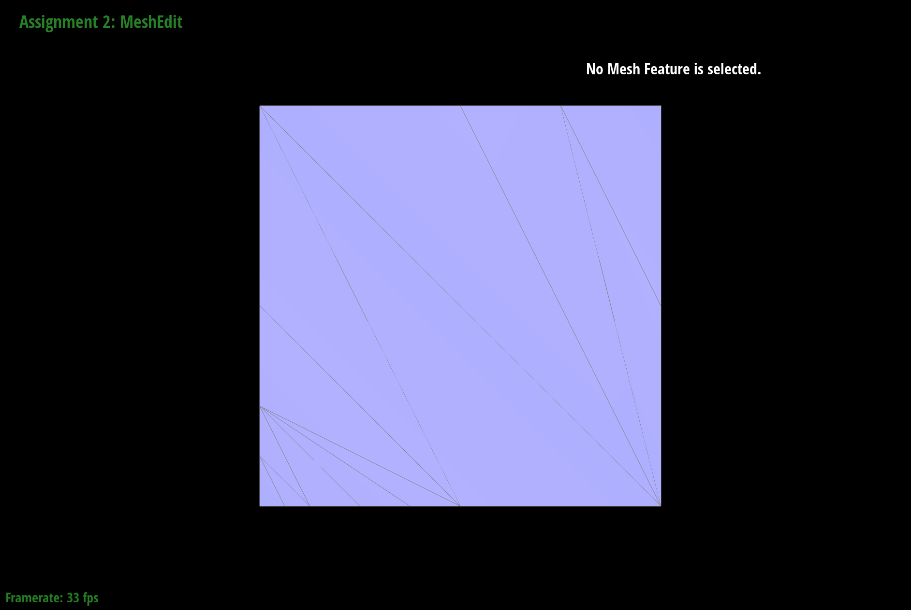
To implement Loop subdivision, I followed a five-step pipeline that transforms a coarse mesh into a smooth, high-resolution surface by combining topological changes with weighted averaging. First, I pre-computed the newPosition for all existing vertices based on their degree (\(n\)) and the positions of their neighbors, using the weighting factor \(u = 3/(8n)\) (or \(3/16\) if \(n=3\)). I then calculated the positions for the new vertices that would be created at the midpoints of every edge. The critical technical challenge was step three: splitting every original edge. To avoid an infinite loop caused by the dynamic addition of new edges, I first gathered all original edges into a static vector before iterating through them to perform the splits. After splitting, I flipped any new edge that connected one old and one new vertex to maintain an equilateral triangulation. Finally, I updated all vertex positions to their pre-computed values.
When performing subdivision on the default cube.dae, I observed two distinct phenomena: the rounding of sharp corners and an asymmetric "bulging" effect. Sharp corners lose their definition because the weighted average pulls vertices toward the centroid of their neighbors. By pre-splitting edges near these corners, I was able to "anchor" the geometry, as the increased density of local vertices reduces the distance they can shift during the smoothing step.The asymmetry in the cube occurs because each square face is initially divided by only a single diagonal edge, meaning some vertices have a higher degree than others. This creates an uneven distribution of weights during the subdivision process, leading to the skewed result seen in my screenshots. To alleviate this, I pre-processed the cube by splitting the diagonal edge on every face to create a symmetric "X" pattern. This ensures every face is topologically identical and every vertex has a uniform degree, allowing the cube to subdivide into a perfectly symmetrical sphere-like shape.
|
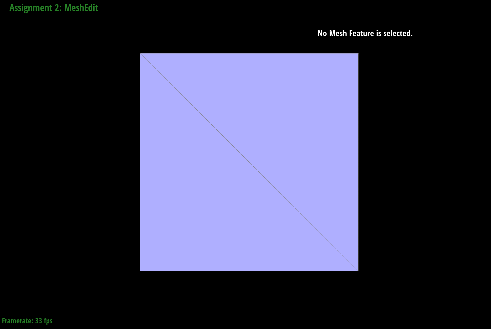 |
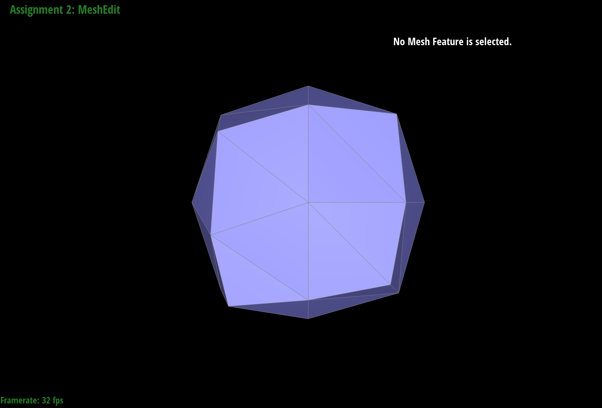 |
|
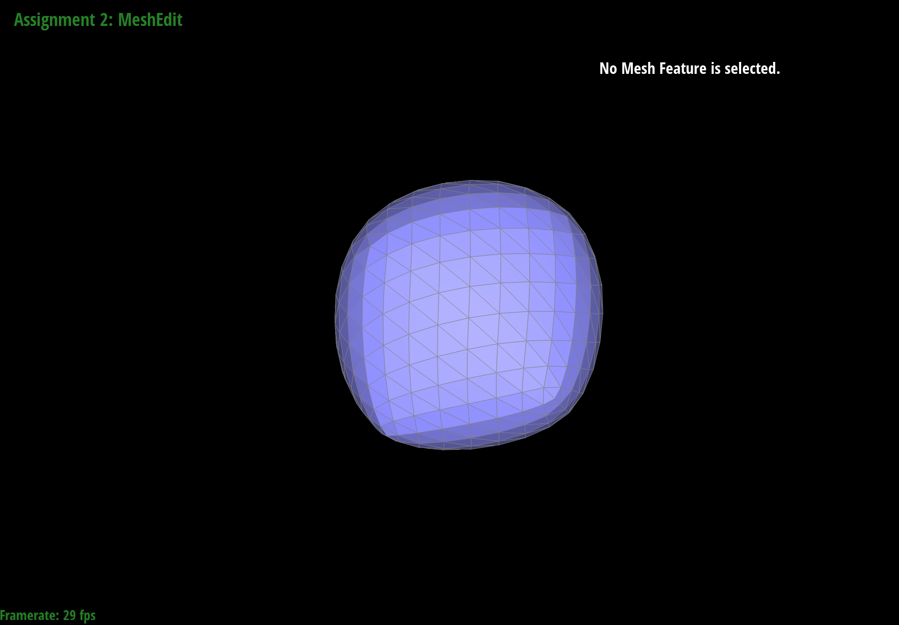 |
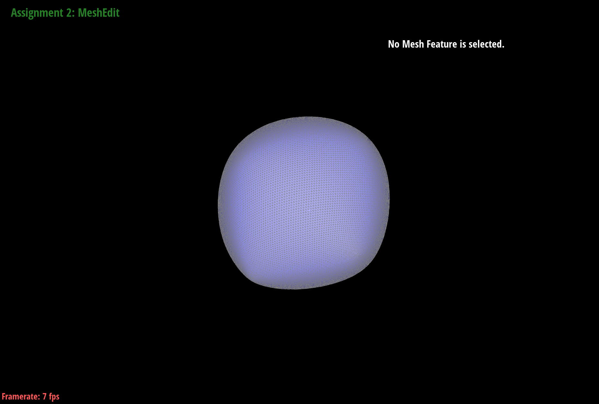 |